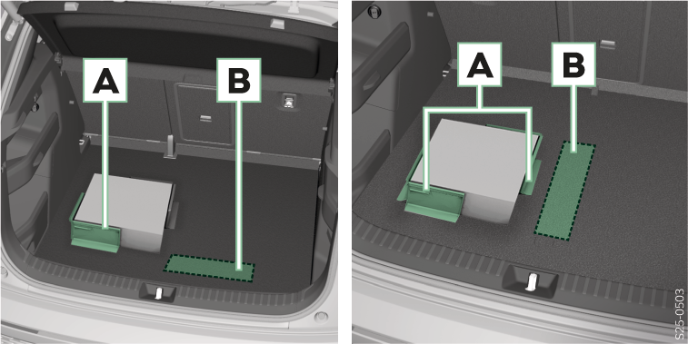

Crochet pliable pour sacs
Charge max. 7,5 kg
Crochets pour fixer les filets de fixation
Œillets d’ancrage pour fixer la cargaison et les filets de fixation
Charge de chaque œillet individuel maximum 50 kg
Œillets d’arrimage pour fixer les filets de fixation et le sac de rangement
Éléments Cargo

Éléments Cargo
Charge max. 8 kg
Replier l’élément Cargo et le fixer au revêtement de sol du coffre à bagages.
Compartiment de rangement pour les éléments Cargo sous le revêtement de sol dans le coffre à bagages.